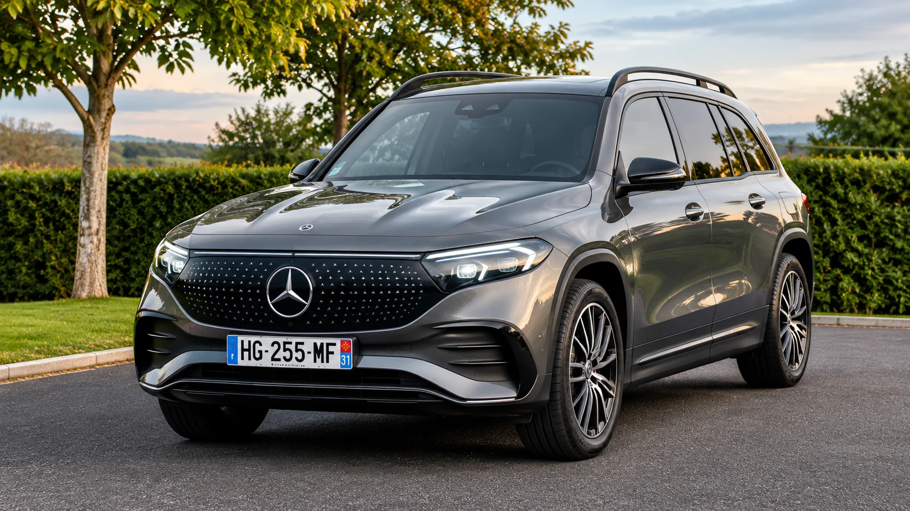
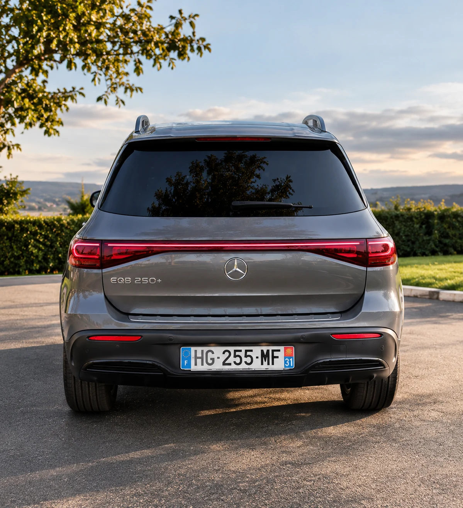
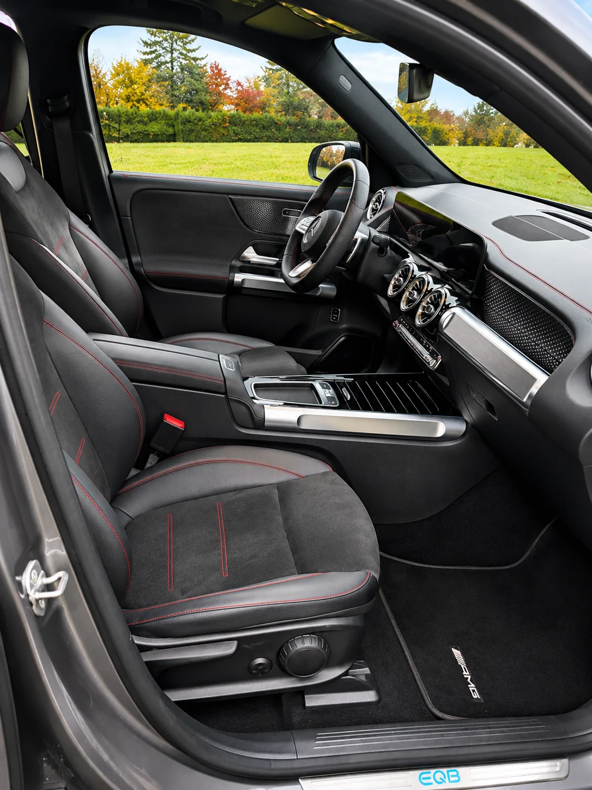

Votre chauffeur privé
à Toulouse
et sa région.
Transferts aéroport et gare, déplacements professionnels, trajets privés et sorties touristiques. René vous conduit en Mercedes EQB 250+ 100 % électrique, 24 h/24 et 7 j/7 sur réservation.
Vous préférez écrire ? Parlons sur WhatsApp.
Un besoin précis ?
Demandez un rappel.
Un transfert, une journée de visites ou une question sur la prise en charge ? Laissez vos coordonnées et indiquez le meilleur moment pour vous joindre.
Vous préférez appeler ? 06 88 79 36 83Un chauffeur privé.
Pour tous vos trajets.
Commencez par ce qui vous ressemble.
Cinq services pour vos déplacements dans le secteur de Toulouse, Revel, du Lauragais et de Castres.
Découvrir les prestations en détail
Transport aéroport
Un départ matinal ou une arrivée tardive : organisons votre transfert et vos bagages.
Transport gare
Pour rejoindre votre train ou rentrer après le voyage, convenons du point de rendez-vous.
Déplacement professionnel
Réunions, rendez-vous et journées de travail : un trajet qui suit votre agenda.
Transport privé
Une sortie, un proche à retrouver, un événement : vous choisissez la destination.
Transport de personnes à mobilité réduite
Échangeons avant le départ sur vos besoins d’assistance et les conditions d’installation.
Un trajet bien préparé,
en trois temps.
Vous précisez le trajet
Service, adresses, date, heure, passagers et bagages : préparez les détails dans le formulaire ou appelez directement.
Le chauffeur vous répond
Vous convenez ensemble de la disponibilité, du tarif et des conditions de prise en charge.
Votre départ est confirmé
Une fois l’accord du chauffeur reçu, conservez les informations et le point de rendez-vous.
Derrière RCT31,
il y a René.
RCT31 est une entreprise de transport avec chauffeur implantée à Revel et dirigée par René Claude Fuoco.
Avant de parler de kilomètres, parlons de votre journée : à quelle heure devez-vous arriver ? Voyagez-vous avec des enfants ? Avez-vous beaucoup de bagages ? Ce sont ces détails qui permettent de préparer votre déplacement.
Mercedes EQB 250+.
100 % électrique.
Pour un départ à l’aéroport comme pour vos trajets du quotidien, retrouvez votre chauffeur à bord du Mercedes EQB 250+ de RCT31.





Galerie RCT31 : vues extérieures et habitacle du Mercedes EQB 250+.
Votre mobilité.
Votre rythme.
Notre chauffeur assure le transport de personnes à mobilité réduite. Pour préparer votre déplacement, contactez-le à l’avance : vous pourrez préciser l’assistance nécessaire, les aides à la mobilité et les conditions d’installation dans le véhicule.
Les modalités de prise en charge et la compatibilité avec votre fauteuil, le cas échéant, sont à confirmer directement avec le chauffeur avant la réservation.
De jour.
Comme de nuit.
RCT31 intervient 24 h/24 et 7 j/7. Contactez votre chauffeur pour convenir de l’horaire et confirmer la disponibilité du trajet.
Vous visitez.
René vous conduit.
Une balade à Toulouse ou une escapade à Tarbes ? Convenez de votre itinéraire et du retour avec votre chauffeur. Trajets touristiques sur demande, tarif et disponibilité à confirmer.
Photos des destinations : crédits et licences dans les articles.
Organiser ma sortie avec chauffeurEntre deux trajets.
Avant de prendre la route.
Comment réserver mon trajet ?
Appelez le 06 88 79 36 83 ou contactez le chauffeur sur WhatsApp. Vous pouvez aussi préparer les détails dans notre formulaire. La réservation est confirmée directement par le chauffeur, après accord sur le trajet et le tarif.
Quels secteurs desservez-vous ?
Toulouse, Revel, le Lauragais et Castres, 24 h/24 et 7 j/7, selon disponibilité et sur réservation.
Proposez-vous le transport PMR ?
Oui. Contactez le chauffeur avant la réservation pour préciser vos besoins d’assistance et confirmer les conditions d’installation, notamment si vous utilisez un fauteuil roulant.
Quel véhicule sera utilisé ?
RCT31 dispose d’un Mercedes EQB 250+ 100 % électrique. Précisez le nombre de passagers et de bagages pour vérifier la capacité nécessaire à votre trajet.
Alors, où allez-vous ?
Prenez deux minutes pour poser les détails de votre prochain trajet.